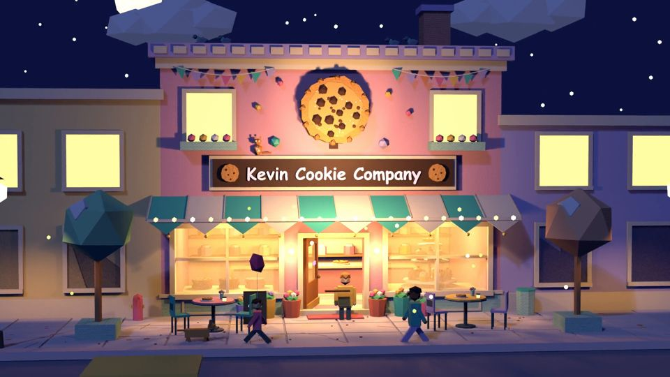
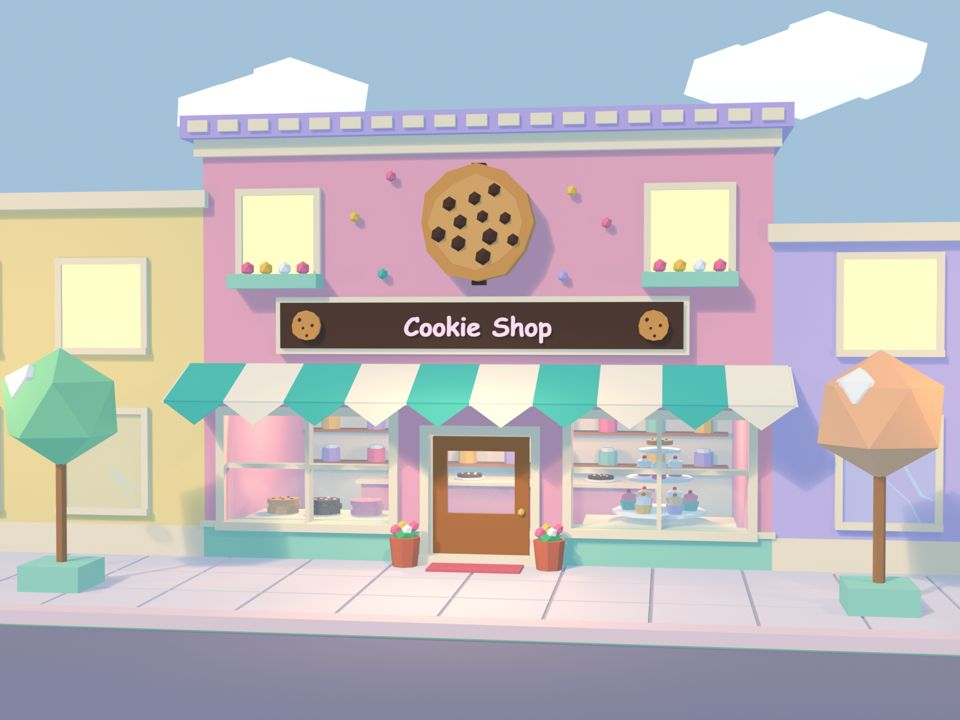
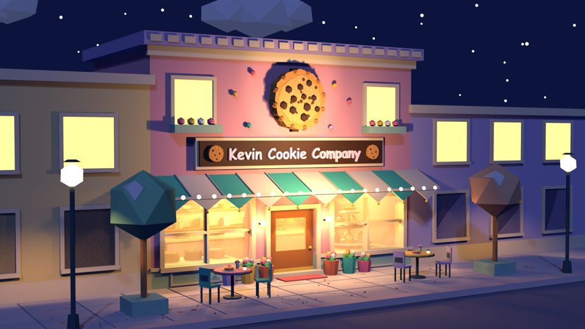
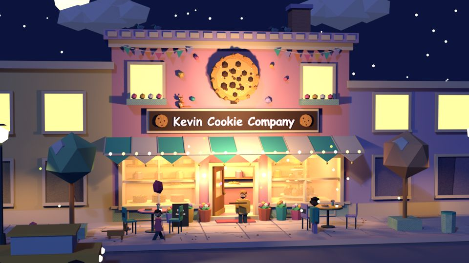

How Claude and Blender Made the Cookie Shop Video
You typed a sentence. A few minutes later you had a 5-second video of a cookie shop at night, with people walking by. This page shows every step in between. For each step you will see what went in, what came out, and the actual messages Claude and Blender sent each other.
You do not need to know Blender. Each Blender word is explained the first time it appears. The source code and the video are in the repository, and you can watch the finished video here.

The big picture
Blender is a free program for making 3D pictures and animations. Normally a person clicks and drags inside Blender. Here, Claude did the work with text instead: it wrote a recipe (a Python script), asked Blender to follow the recipe, then looked at the pictures Blender made, and fixed the recipe until the pictures looked right.
This write, run, look, fix loop ran many times. Each pass took from about 20 seconds (one picture) to about 5 minutes (the whole video).
Words you need
Two ways Claude can talk to Blender
Way A: the live link (MCP)
Blender is open on your screen. An add-on inside Blender listens at localhost:9876. Claude sends Python code and gets a reply, like a chat. Claude can ask for a list of objects, run code, or take a screenshot.
The tools Claude saw for this: execute_blender_code, get_objects_summary, render_viewport_to_path, get_screenshot_of_window_as_image, get_blendfile_summary_path_info.
Way B: the command line (what really happened)
Claude writes a script file, then starts Blender with a command that says "run this script and quit". Blender answers with files and text. Claude reads both.
This is slower per try than the live link, but it needs no open window and no add-on.
The 10 steps
In each step, orange boxes are what Claude sends, teal boxes are what comes back from Blender (or the tool), and blue boxes are from you. Long outputs are shortened and marked "(shortened)". Your computer's folder names are replaced with <project>.
Say what you want, then try the live link
Why: Claude needs your goal in words. It then checks whether Blender is open and listening.
Create a colorful, stylized 3D cookie shop in Blender. Give it a pastel-colored exterior, large display
windows, a striped awning, a sign that says "Cookie Shop," and a giant chocolate chip cookie above the
entrance. Add a sidewalk and warm, inviting lighting. Use a charming, low-poly style and position the
camera to show the entire storefront.ToolSearch query: "select:mcp__Blender__execute_blender_code,
mcp__Blender__get_objects_summary,
mcp__Blender__render_viewport_to_path,
mcp__Blender__get_screenshot_of_window_as_image,
mcp__Blender__get_blendfile_summary_path_info"execute_blender_code: "Execute Python code in the connected Blender instance. ...
To return data, assign a JSON-serialisable dict to a variable named `result`."
get_objects_summary: "Return the scene's collection hierarchy and their objects."
render_viewport_to_path: "Render the current scene to *output_path* using current render settings."get_objects_summary()
get_blendfile_summary_path_info()Error executing tool get_objects_summary: Cannot connect to Blender at localhost:9876.
Ensure Blender is running with the MCP addon enabled and the server started.- Your prompt (text)
- The list of tools Claude may use
- A decision: the live link is off, so use the command line
Find Blender and read the house rules
Why: Command-line mode needs the exact location of blender.exe. Claude also has a saved note (a "skill") with lessons from earlier Blender work.
PowerShell: look for "blender" on PATH, in "C:\Program Files\Blender Foundation", and in Steam
Skill: blender-headlessC:\Program Files\Blender Foundation\Blender 5.3
blender-headless note, key lines (paraphrased):
- Start scripts with bpy.ops.wm.read_factory_settings(use_empty=True)
- Command: blender.exe -b -P script.py
- Set scene.view_settings.view_transform = 'Standard' (the default washes out flat colors)
- Engine name is 'BLENDER_EEVEE' on 5.2, not 'BLENDER_EEVEE_NEXT'
- Use flat shading for the low-poly look- A search of the disk
- A saved note from past work
- Blender 5.3 location
- A checklist of known traps
Write the recipe
Why: A script is the only way to give Blender hundreds of precise instructions without a mouse. Claude turned "pastel shop, awning, sign, cookie, sidewalk" into code. It used small helper functions so the code stays short.
<project>\build_cookie_shop.py
def box(name, x0, x1, y0, y1, z0, z1, m, rot=None, shadow=True):
"""Make a rectangular block between two corners and give it paint m."""
...
def disc(name, c, r, h, m, seg=10, axis='Z', ...):
"""Make a short round cylinder (cookies, tables, jars). seg = number of sides."""
...
# palette: pastel pink walls, mint base, lavender cornice, turquoise awning stripes
box("wall_left", -5, -4.6, 0.4, 6, 0.15, H, PINK)
box("awning_stripe", xa, xb, -L/2, L/2, -0.03, 0.03, STRIPE_A, rot=rot)
...
cam.location = (3.2, -23.0, 4.3) # camera far back so the whole shop fits
bpy.ops.render.render(write_still=True)box("wall_left", -5, -4.6, ...) means "a wall between x = -5 and x = -4.6 metres". The whole shop is built from numbers like these.- Your prompt
- The saved checklist
- Claude's plan for sizes and colors
- One text file, about 20 KB
Run Blender on the recipe
Why: Nothing exists until Blender follows the recipe. This is the "message" Claude sends to Blender in Way B: one command line.
"C:\Program Files\Blender Foundation\Blender 5.3\blender.exe" -b -P build_cookie_shop.py
-b = background (no window) -P = run this Python script00:55.688 render | Saved: '<project>\cookie_shop.png'
Info: Saved as "cookie_shop.blend"
OK <project>\cookie_shop.blend <project>\cookie_shop.png objects: 574 engine: BLENDER_EEVEE
Blender quit
real 1m0.452sOK line at the very end. If that line is missing, the run failed even when the exit code looks fine. Claude searches the output for it.build_cookie_shop.py
cookie_shop.blend(the scene)cookie_shop.png(one picture)- Text log with timings
Claude looks at the picture, then fixes
Why: Claude cannot see Blender's screen, but it can open an image file. The Read tool sends the picture to Claude as an image. Claude judged the first picture as too washed out and brightened less.
Read <project>\cookie_shop.png
sun strength 2.6 -> 1.7
sky light 300 -> 120
world brightness 1.0 -> 0.7
(also: glass inside the upper windows was hidden in the wall, so it was moved forward)
blender.exe -b -P build_cookie_shop.py
OK ... objects: 573 engine: BLENDER_EEVEE- The first render as an image
- A better recipe and a second render
- The day-version picture, sent to you
New prompts: tables, night, "Kevin Cookie Company"
Why: You pointed Claude at a README.txt that listed more prompts. Claude read it and applied them in order. The first attempt to find the file found nothing, because the file name is in capitals.
Glob pattern: **/[Rr]eadme*.txt -> No files found
Bash ls -la ; find ... -iname "readme*.txt" -> README.txt (case-insensitive search worked)
Read README.txt"Add two small outdoor tables with chairs in front of the cookie shop, along with colorful flower pots ..."
"Change the scene to nighttime. Add warm lights inside ... make the windows glow ... Change the sign name to
"Kevin Cookie Company." Also add more texture and detail ..."
"Create a 5-second animation at 24 frames per second. Have the camera slowly orbit ... rotate the giant cookie ..."
"Render the current animation as a 1920 x 1080 MP4 video at 24 frames per second. Use H.264 ..."Claude kept the old script as a backup, then edited the recipe: new tables and chairs, dark blue sky with stars, warm lamps, glowing glass, texture on walls, awning, sidewalk and cookie. It rendered one test picture (frame 60) to check.
Error: Shadow buffer full, may result in missing shadows and lower performance. (2730 / 2048)
... repeated many times ...
OK ... mode: still objects: 1097 engine: BLENDER_EEVEE
real 0m21.240sblender.exe -b --python-expr "import bpy; p=bpy.types.SceneEEVEE.bl_rna.properties;
print('POOL', [i.identifier for i in p['shadow_pool_size'].enum_items])"POOL ['16', '32', '64', '128', '256', '512', '1024', '1536', '2048']Claude set the shadow memory to '1024' (the warnings stopped), pulled the camera back to fit a 16:9 frame, and lowered the window glow a little. It rendered frames 1 and 120 to check both ends.

- Prompts from README.txt
- The previous recipe
- A warning from Blender
- Night recipe (1,097 objects)
- Test pictures of frames 1, 60, 120
Add motion: keyframes
Why: A video needs things to change over time. In Blender you set a value at one frame, set a different value at a later frame, and Blender fills in the frames between. Claude did this in the recipe with keyframe_insert.
FPS, SECONDS = 24, 5
scene.frame_start, scene.frame_end = 1, FPS * SECONDS # frames 1..120
cam.parent = cam_rig # camera rides on an invisible "arm"
cam_rig.rotation_euler = (0, 0, math.radians(-30 - base_az))
cam_rig.keyframe_insert('rotation_euler', index=2, frame=1) # arm points left on frame 1
cam_rig.rotation_euler = (0, 0, math.radians(30 - base_az))
cam_rig.keyframe_insert('rotation_euler', index=2, frame=FPS * SECONDS) # arm points right on frame 120
cookie_rig.rotation_euler = (0, math.radians(180), 0) # cookie turns half a circle
cookie_rig.keyframe_insert('rotation_euler', index=1, frame=FPS * SECONDS)- "5 seconds, 24 fps, slow orbit, spinning cookie"
- Timeline set to frames 1-120
- Animation stored inside the scene
Render the video (and fix an error)
Why: The last prompt asks for an MP4 file. Blender draws all 120 frames and joins them into one video. Blender 5 changed how the video setting works, and the first try failed.
r.image_settings.file_format = 'FFMPEG' # "make a video"
r.ffmpeg.format = 'MPEG4'
r.ffmpeg.codec = 'H264'
r.ffmpeg.constant_rate_factor = 'MEDIUM' # quality / size balance
bpy.ops.render.render(animation=True) # draw every frameTypeError: bpy_struct: item.attr = val: enum "FFMPEG" not found in
('AVIF', 'JPEG', 'OPEN_EXR', 'PNG', 'WEBP', 'BMP', 'CINEON', 'DPX', 'IRIS', 'JPEG2000', 'HDR', 'TARGA', 'TARGA_RAW', 'TIFF')blender.exe -b --python-expr "... print('MT', [i.identifier for i in r.image_settings.bl_rna.properties['media_type'].enum_items]) ..."MT ['IMAGE', 'MULTI_LAYER_IMAGE', 'VIDEO'] # set VIDEO first, then FFMPEG becomes availabler.image_settings.media_type = 'VIDEO'
r.image_settings.file_format = 'FFMPEG'- The animated scene
- 1920 x 1080, 24 fps, H.264
CookieShop.mp4- No frames kept, just the video
Check the video with a second tool
Why: "Blender finished" does not prove the file is right. Claude asks ffprobe (a video inspector) for the facts and compares them with your prompt.
ffprobe -v error -show_entries stream=codec_name,width,height,r_frame_rate,nb_frames,duration -of default=nw=1 CookieShop.mp4codec_name=h264
width=1920
height=1080
r_frame_rate=24/1
duration=5.000000
nb_frames=120SendUserFile CookieShop.mp4 (2.6 MB, first version)CookieShop.mp4- Your spec from the prompt
- Pass or fail for each number
- The video in your chat
"Make it fun and feel alive"
Why: The first video only moved the camera and the cookie. You asked for more life. Claude added people, a dog, a car, a customer who walks into the shop, a cat, a pigeon that flies away, twinkling stars, swaying bunting, and more. All of it is keyframes, like step 7, repeated hundreds of times in a loop.
kid = person("kidA", shirt='#FF7FA8', pants='#3D5A6C') # a few boxes: torso, head, 2 legs, 2 arms
path(kid['root'], [(1, -10.5, -4.15), (121, 9.5, -4.15)]) # x goes from -10.5 m to 9.5 m over 120 frames
walk(kid, 1, 121, period=10, amp=0.8) # swing legs and arms every 10 framesThen Claude tested three still frames (1, 50, 90) before spending 5 minutes on the full render.

- A walker passed through a tree planter and a hydrant -> paths moved to separate lanes, hydrant and bin moved
- The car looked too big at the bottom of the frame -> car moved further down the street (y = -8.5 to -12)OK <project>\cookie_shop_night.blend mode: anim objects: 1274 engine: BLENDER_EEVEE
real 5m11.380s
(ffprobe) h264 1920x1080 24/1 duration=5.000000 nb_frames=120- "Add more detail. Make it fun and feel alive."
- Test frames
- Final
CookieShop.mp4(3.2 MB) - Scene grew from 574 to 1,274 objects
Every message, in order
This table lists each exchange between Claude and Blender (or the tools around it). A fail tag shows an exchange that did not work, and how Claude used the failure.
| # | Claude sends | Channel | What came back |
|---|---|---|---|
| 1 | Ask for the Blender tool definitions | ToolSearch | 5 tool descriptions (run code, list objects, render, screenshot, file info) |
| 2 | get_objects_summary | Blender live link | fail "Cannot connect to Blender at localhost:9876" |
| 3 | get_blendfile_summary_path_info | Blender live link | fail same error. Claude switches to the command line. |
| 4 | Search the disk for Blender | PowerShell | Blender 5.3 folder path |
| 5 | Load the blender-headless note | Skill | Checklist: -b -P, Standard color, flat shading |
| 6 | Save build_cookie_shop.py | Write | File created (about 20 KB) |
| 7 | Two small edits (clean-ups) | Edit | Edits applied |
| 8 | blender.exe -b -P build_cookie_shop.py | Bash | ok 574 objects, 1 min, PNG and .blend saved |
| 9 | Open cookie_shop.png | Read | The picture. Claude sees it as too washed out. |
| 10 | Change lighting numbers, run again | Bash | ok 573 objects. Picture sent to you. |
| 11 | Find Readme*.txt | Glob | fail no match (capital letters). A case-insensitive search found README.txt. |
| 12 | Read README.txt | Read | 4 more prompts: tables, night, animation, MP4 |
| 13 | Write a patch file, back up the script, apply the night edits, render frame 60 | Write, Bash | ok 1,097 objects, 21 s. Warning: "Shadow buffer full (2730 / 2048)" |
| 14 | Open the frame-60 render | Read | Image. Camera too tight at 16:9. |
| 15 | Ask Blender for legal shadow-memory values | Bash (--python-expr) | ['16', ... '1024', '1536', '2048'] |
| 16 | Set 1024, pull camera back, render frames 1 and 120 | Bash | ok zero warnings. Both images looked right. |
| 17 | Render the full animation to MP4 | Bash | fail TypeError: enum "FFMPEG" not found |
| 18 | Ask Blender for the legal media types | Bash (--python-expr) | ['IMAGE', 'MULTI_LAYER_IMAGE', 'VIDEO'] |
| 19 | Add media_type = 'VIDEO', render again | Bash (background) | ok MP4 created |
| 20 | ffprobe on the MP4 | Bash | h264, 1920x1080, 24 fps, 120 frames, 5.000 s |
| 21 | Send the MP4 to you | SendUserFile | File card in your chat |
| 22 | Write the "alive" edits, render test frames 1, 50, 90 | Write, Bash | ok 1,274 objects. Images showed the street life working. |
| 23 | Open frames 50 and 90 | Read | Images. Found a walker inside a planter and an oversize car. |
| 24 | Move lanes, move car, render the full animation | Bash (background) | ok 5 min 11 s. Exit code 0. |
| 25 | ffprobe and grab a frame at 2.2 s | Bash | 5.000 s, 120 frames. Frame image looked right. |
| 26 | Send the final MP4 to you | SendUserFile | File card in your chat |
Not shown: an unrelated add-on message printed at the end of some Blender runs (it did not affect the render), and work that did not involve Blender (the tutorial page and the GitHub upload).
Who sees what
Claude can see
Text that Blender prints. Error messages. Image files it opens (it sees the picture, not numbers). Video facts from ffprobe. The recipe file it wrote.
Claude cannot see
Your screen. A live Blender window (it was never connected). The finished video playing. Claude judged motion from still test frames and file facts. It did not watch the whole video.
Blender can see
Only the recipe file and its own settings. It has no idea what you asked for. It follows instructions and reports errors.
Try it yourself
You need Blender 5.3 and the repository files. Open a terminal in the folder that holds build_cookie_shop.py.
One picture (about 20 seconds)
blender -b -P build_cookie_shop.py -- still 60The video (about 5 minutes)
blender -b -P build_cookie_shop.py -- animWant to explore the scene by hand? Open cookie_shop_night.blend in Blender and press Space to play the animation. Click objects in the list at the top right to see their names, like giant_cookie or sign_text.